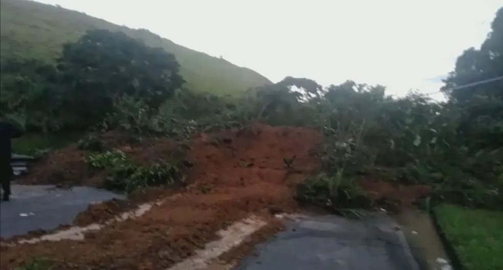

Na pista de descida, sentido Rio de Janeiro, o fechamento acontece no quilômetro 265. Já na pista de subida, sentido São Paulo, o tráfego está interrompido no quilômetro 225. Não há previsão de reabertura.

A concessionária CCR RioSP, que administra a
BR-116 (Via Dutra), informou na madrugada desta
sexta-feira (10) que, em virtude das chuvas fortes
e intensas dos últimos dias, que atingem diversos
trechos da rodovia, foi preciso interditar totalmente
a Serra das Araras, em ambos os sentidos.